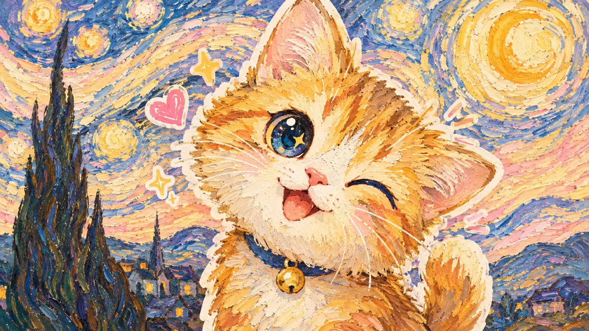
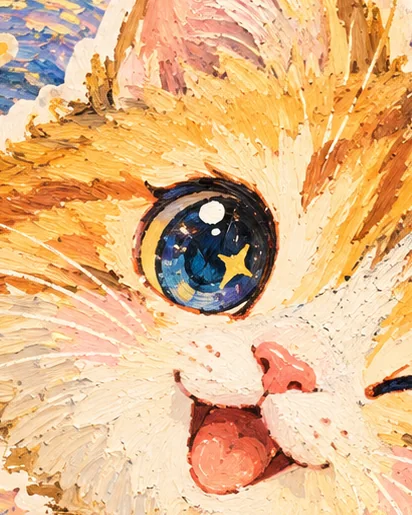
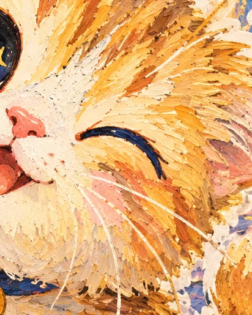
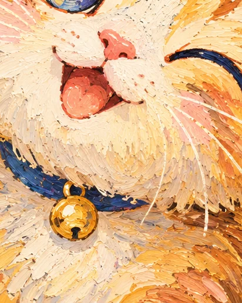
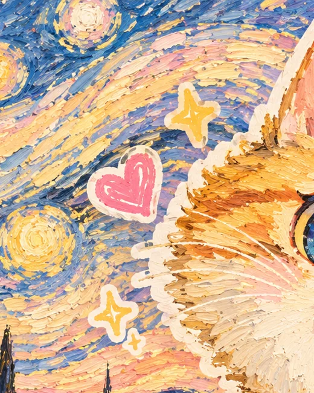
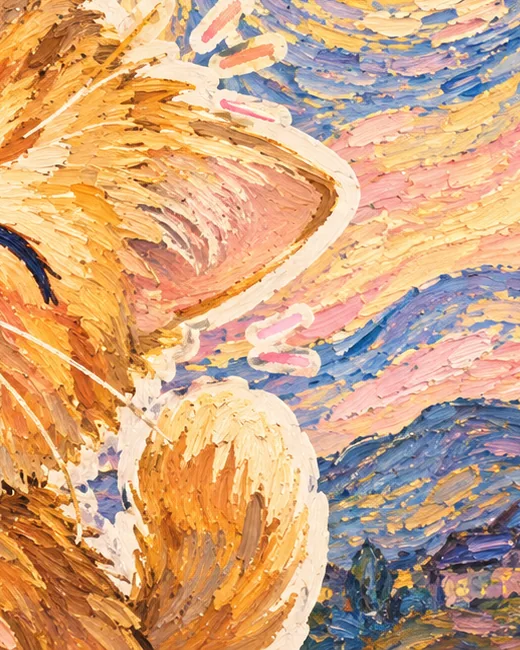
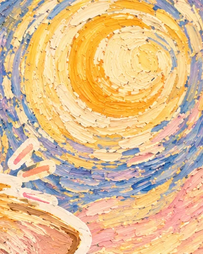

A Small Exhibition of Not Worrying
一场关于「没关系」的小型展览
OK, NO WORRIES.
没关系，一切都好。
它眨着一只眼睛，像是在说：今天的事，可以先放一放。
向下
§ 00
Foreword
卷首语
三个音节，
一句很好用的话。
ok.no.kg 拆开来看是三段：OK 是一声回应，NO 是 no worries 的前半个词，KG 是我们留在末尾的签名。
连起来读，就是一句很普通、但很难得的话——没关系，一切都好。它不负责解决问题，它只负责在你已经够累的时候，先让你松一口气。
域名拆解 / The Breakdown
- OK回应。收到了，我在。
- NONo worries。不必现在就好起来。
- KG品牌缩写。句尾的一点回声。
§ 01
The Answer
是回应
OK.
先应一声，气就下来一半。
OK 不一定是同意，也不一定是「我没事」。它只是有人先应你一声：这件事我知道了。剩下的可以慢慢说，也可以不说。
所以那只猫睁着一只眼睛——里面装着整片星夜，但它看的是你。

§ 02
No Worries
是别担心
NO.
不是没有困难，是不必今天解决。
急的事可以慢一点讲，难的事可以改天再想。眨眼不是不在乎，是知道自己已经尽力了。
别把每件事都当成今天的作业——这只猫吐着舌头，它今天唯一的任务就是开心。

§ 03
The Signature
是签名
KG.
挂在门口，谁都可以拿回去用。
KG 不解释什么。它是签名，也是铃铛响过之后剩下的那一点声音：有人在家。
下次你把这些字母拼给谁听，希望对方正好需要这句话。

§ 04
Plates
图版



Interlude / 插页
「别担心啦，
一切都会好起来的。」
Don't worry. It all works out in the end.
— 那只猫